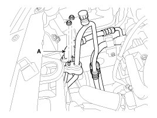
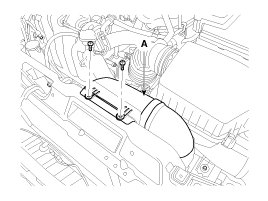
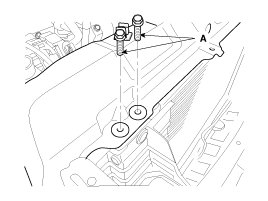
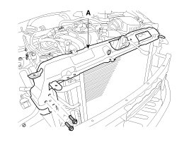
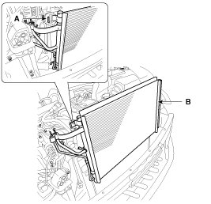

Repair Procedures
Inspection
1. Check the condenser fins for clogging and damage. If clogged, clean them with water, and blow them with compressed air. If bent, gently bend them using a screwdriver or pliers.
2. Check the condenser connections for leakage, and repair or replace it, if required.
Replacement
1. Recover the refrigerant with a recovery/ recycling/ charging station.
2. Disconnect the negative (-) battery terminal.
3. Remove the front bumper assembly.
4. Remove the heat light assembly.
5. Remove the discharge line and liquid line (A) from the condenser.
Tightening torque :
7.8 - 11.7N.m (0.8 - 1.2kgf.m, 5.7 - 8.6 lbf.ft)

6. Remove the intake air duct (A).

7. Loosen the radiator mounting bolts (A).

8. Loosen the mounting bolts and then remove the radiator upper panel (A).

9. Remove the condenser (A) from radiator.

10. Install in the reverse order of removal, and note these items :
A. If you're installing a new condenser, add refrigerant oil ND-OIL8.
B. Replace the O-rings with new ones at each fitting, and apply a thin coat of refrigerant oil before installing them. Be sure to use the right O-rings for R-134a to avoid leakage.
C. Be careful not to damage the radiator and condenser fins when installing the condenser.
D. Be sure to install the lower mount cushions of condenser securely into the holes.
E. Charge the system, and test its performance.